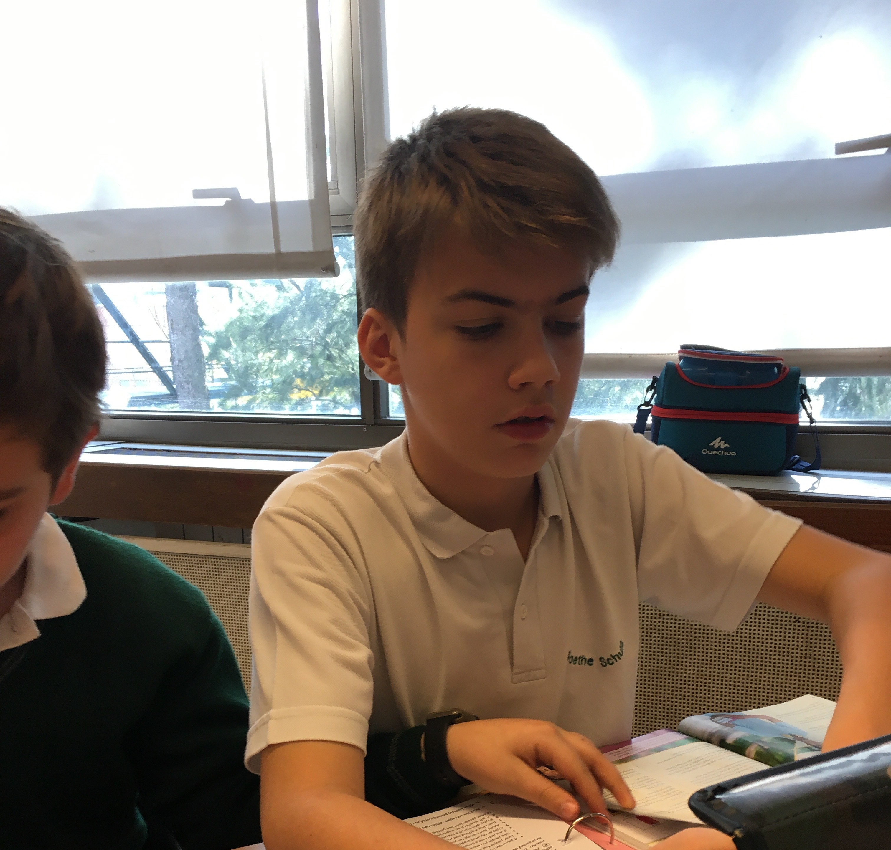
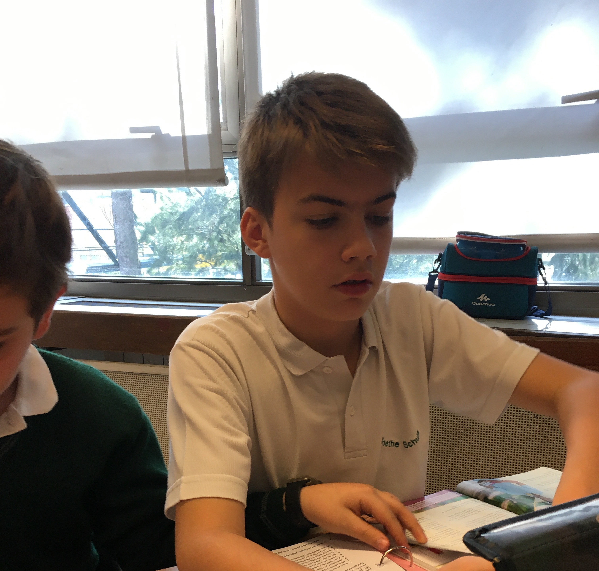
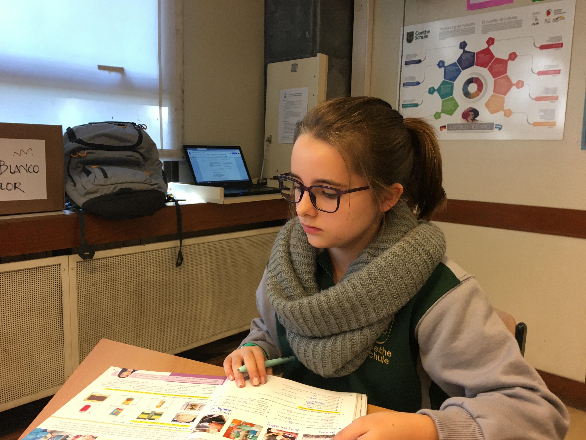
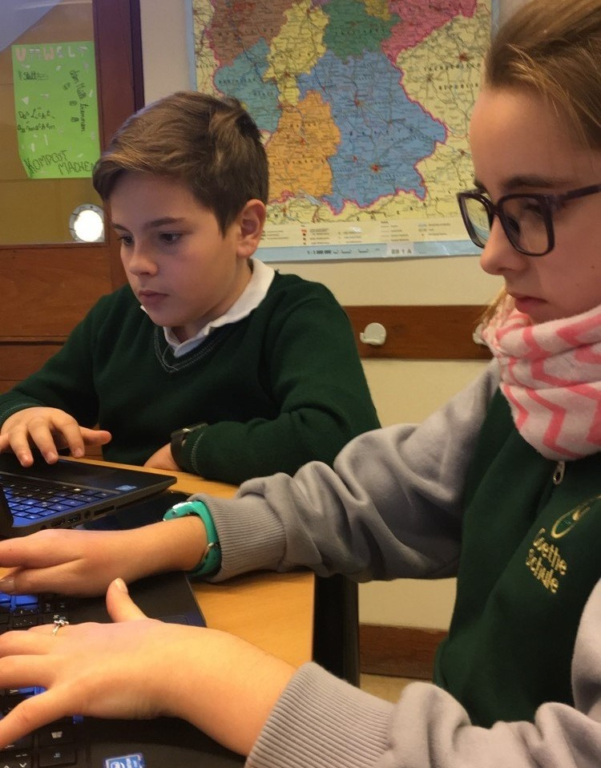
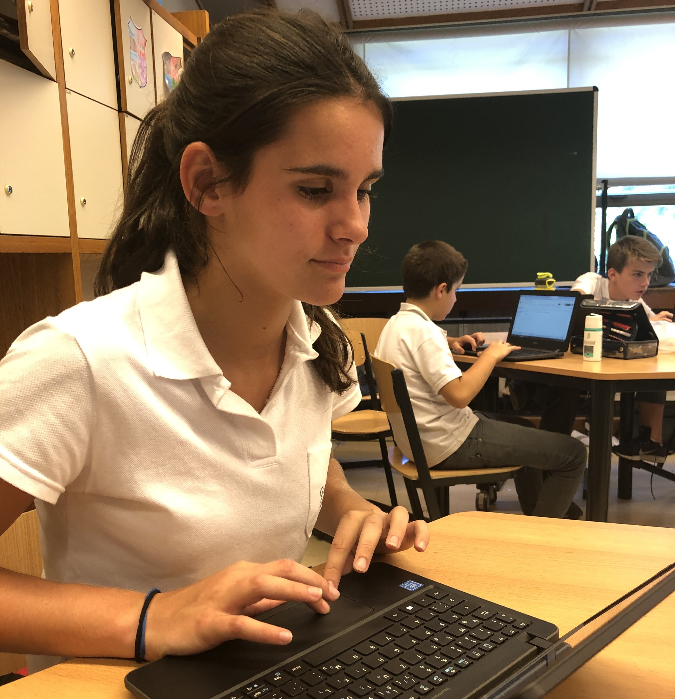
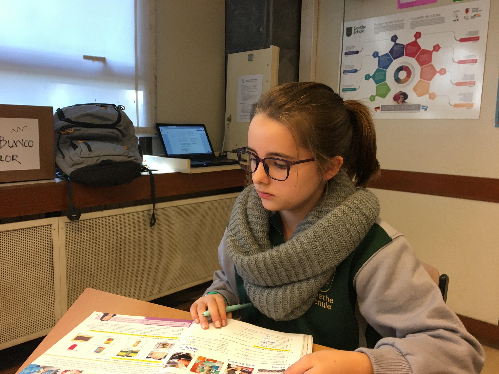
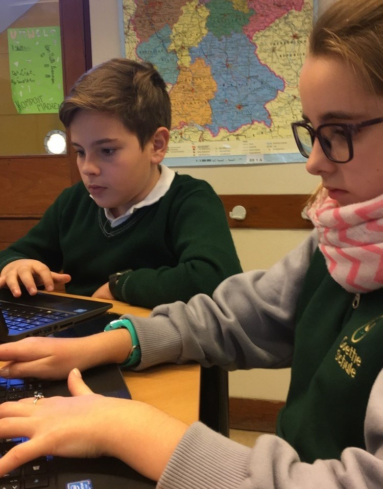
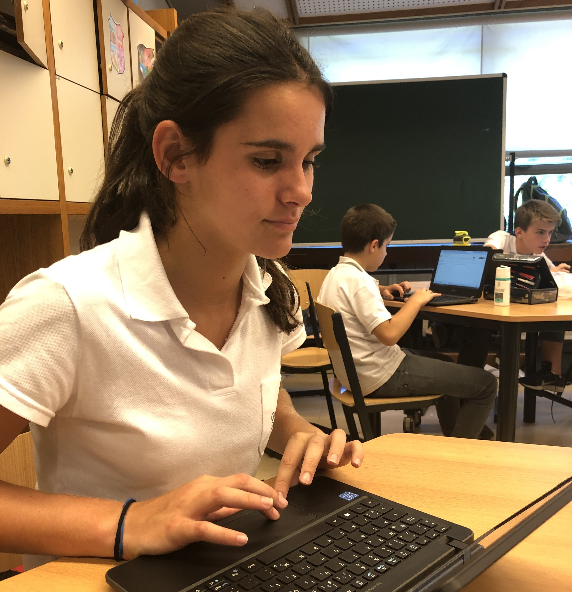
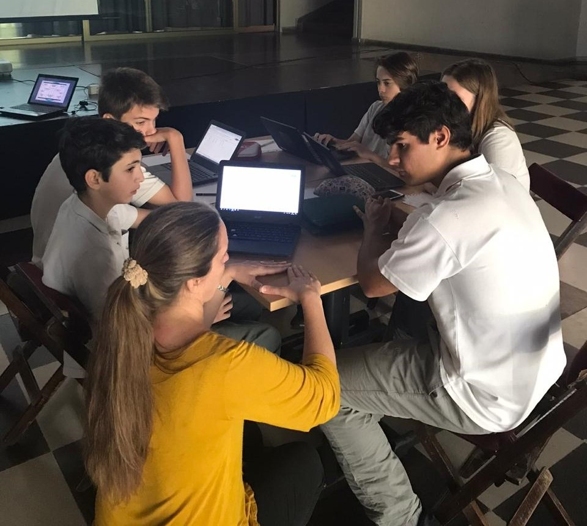
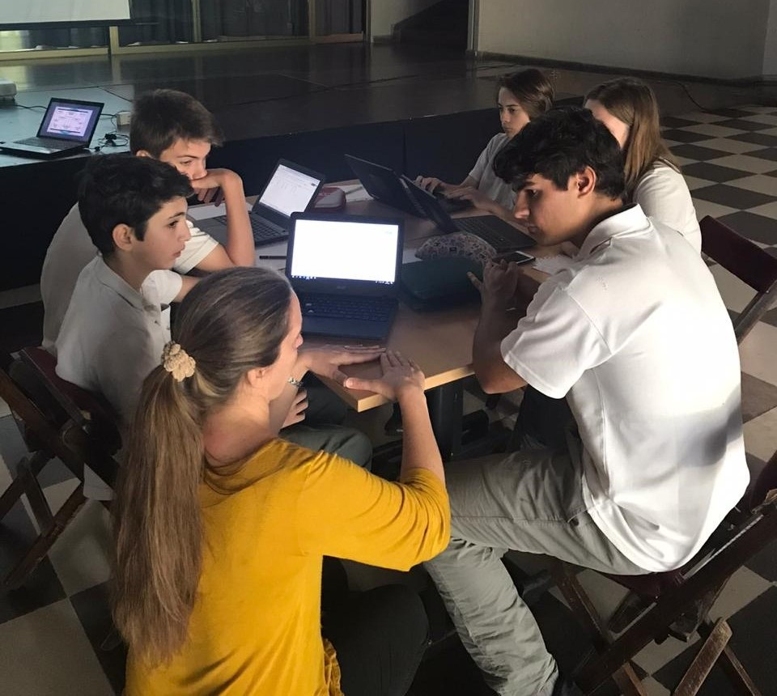

Portfolio
Para hacer este proyecto, hicimos a principio de año en el Drive y escribimos todas las recetas del Menu. Las recetas las pasamos al ingles y nos pusimos un nombre al grupo. En agosto nos juntamos con los chicos de cuarto año en el hall Germania y nos explicaron todo sobre la alimentacion y como es un menu saludable. Ahi tambien nos ayudaron a como diseñar el logo. Despues Thomas diseño el logo y entre todos la pagina web. Nuestro logo es muy básico pero animado. Cuando pensamos en el nombre sabiamos que ibamos a poner alguna foto que tenga algo que ver con la película “Ratatouille”, porque el nombre está inspirado en ella. A nosotros nos parecio que la experiencia con los chicos de 4to fue genial, nos enseñaron muchas cosas y nos sirvió para el proyecto. Juan fue el que diseño el Logo. El encuentro con los de 6to fue una de las cosas que más nos sirvieron. Solo fue uno de cada grupo, de nuestro grupo fue Juan. Primero nos presentaron una presentación y nos explicaron algunas cosas claves. Después te separaban en mesas con mínimo uno de sexto y ellos te iban ayudando y explicando cómo se podía llegar al precio con una ganancia para beneficiar nuestro negocio de catering. Los chicos de sexto fueron muy amables y escucharon cada pregunta que les hicimos. siempre intentaban explicartelo de la mejor manera para que lo entendieras bien. Luego buscamos los costos de los ingredientes de todas las recetas en el drive. Empezamos el proyecto en el Atom e hicimos un usuario para cada grupo. El video lo hicieron Juan y Thomas cada uno por su y cada uno en su casa. Lo hicieron a la tarde con la aplicacion Imovie! Filmar el video fue muy divertido. Thomas cocinó el tiramisú y juan los panqueques. Maiki y maia hicieron las voces en off, aunque maia no pudo terminar la de el tiramisú porque estaba muy ocupada haciendo las traducciones del index asi que … la termino. La parte de editar fue medio aburrida porque ya te cansabas de escuchar miles de veces la misma parte hasta que la terminabas de editar.
 

 





 
